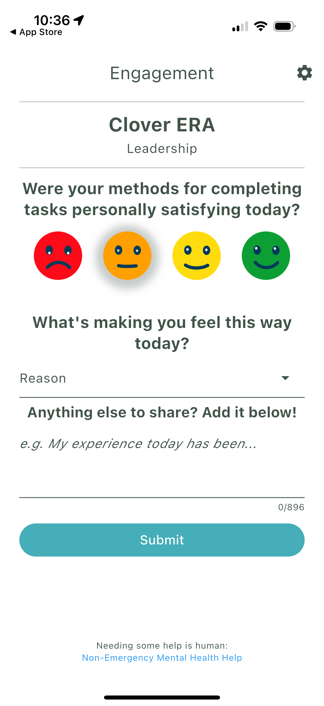
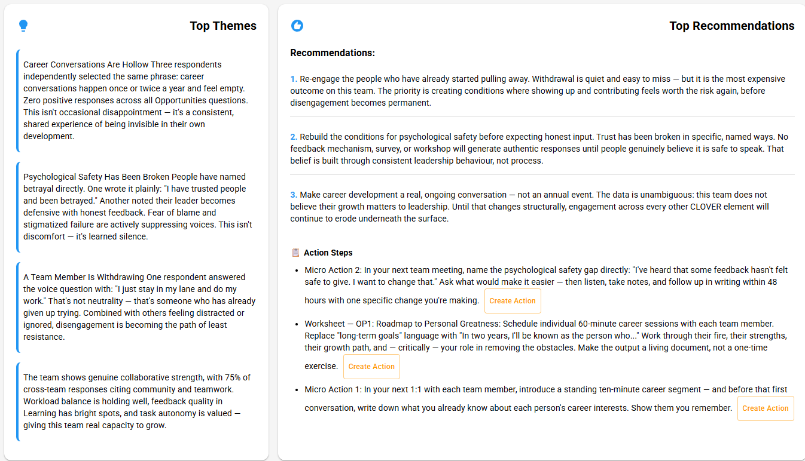
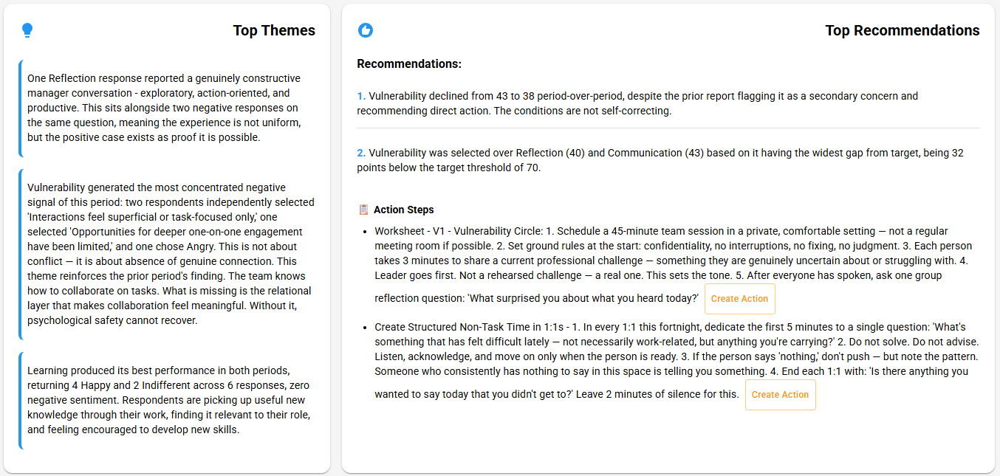
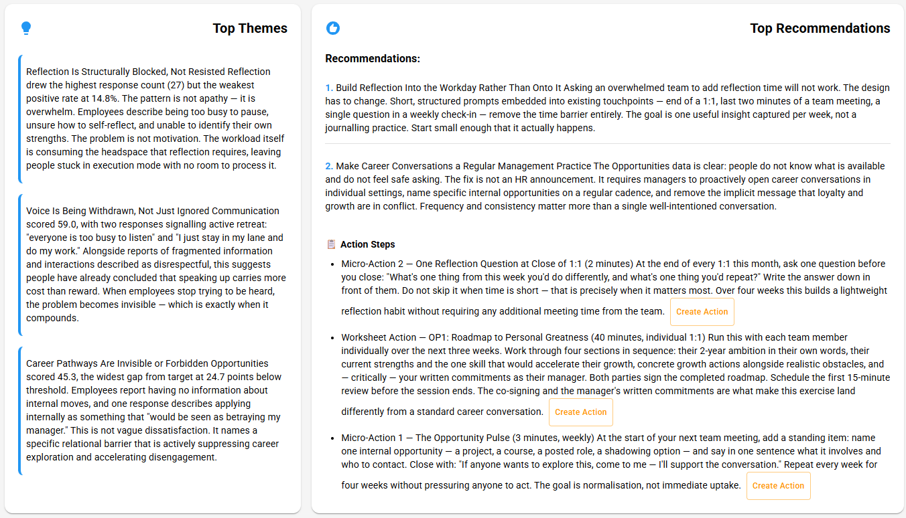
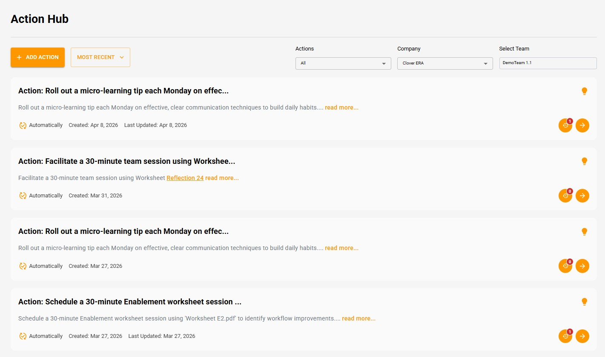
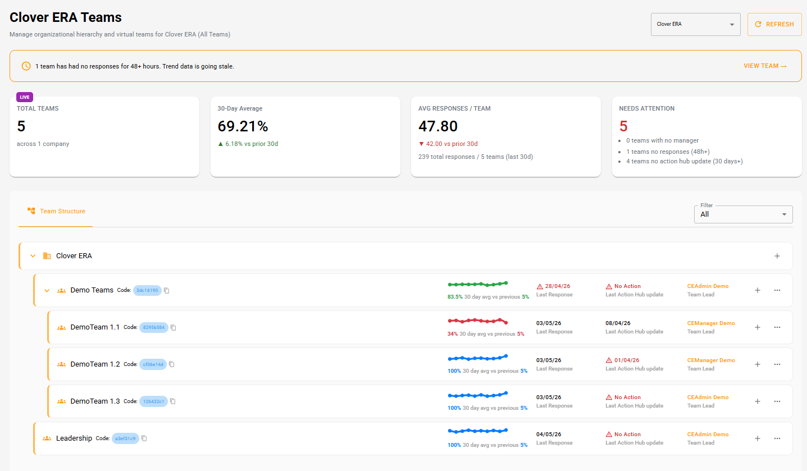
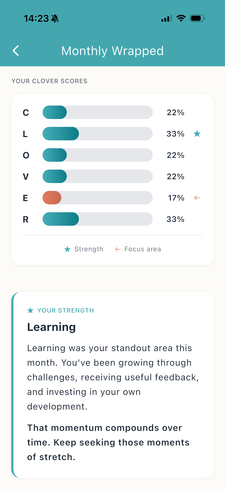
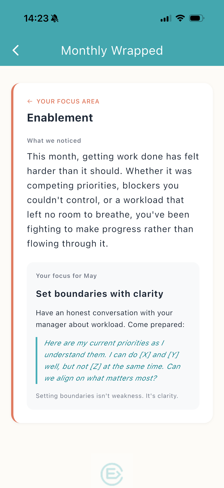

Every company wants higher productivity. Clover ERA is built to deliver it in a way no one has tried.
The standard productivity playbook has three moves. Cut costs. Push harder. Add tools. Each has been tried extensively and the diminishing returns are visible on most income statements.
What has not been tried is treating the human side of work as something you can actually measure. Companies measure their machines. They do not effectively measure the conditions under which their people perform.
Clover ERA does. The platform measures six specific conditions across every team, surfaces what each manager needs to attend to, and routes specific actions that build the conditions where people deliver their best work.
One question. 30 seconds. Completely anonymous.
Each person on your team gets one question per day through the app. It takes less than 30 seconds. No names attached. No way to trace who said what.
That's the point. People are honest when there's no risk. The signals they'd never bring up in a 1-on-1 surface immediately when there's no consequence attached.
Within a week, you start seeing patterns. Within two weeks, you know exactly where your team's perception is diverging from yours. The gap shows up before anyone resigns, before performance drops, before the dashboards catch on.

The six things that determine whether someone stays engaged or starts to degrade.
Every check-in maps to one of six CLOVER dimensions. Each one is a measurable signal that maps to retention, performance, and discretionary effort.
-
CCommunication
Is information flowing in both directions? Does your team feel heard when they raise something?
When it drops: Your team has stopped telling you what's going wrong. Problems build in silence until someone resigns and lists "communication" in the exit interview.
-
LLearning
Are people growing? Do they feel like they're developing new skills or just repeating the same work?
When it drops: People feel stuck. The ones with options start exploring them. The ones without options disengage in place.
-
OOpportunity
Can people see a future here? Is there somewhere to go, or does the path ahead look flat?
When it drops: Your best people start browsing job boards. Not because they hate the job. They can't see what's next.
-
VVulnerability
Can people be honest without risk? When something's wrong, do they say it or hide it?
When it drops: You get a team that says "everything's fine" in every meeting while building resentment underneath. The resignation comes out of nowhere because nobody felt safe flagging the problem.
-
EEnablement
Do people have what they need to do their job well? Are blockers being removed or ignored?
When it drops: Frustration builds. Good people start feeling like they're fighting the system instead of doing their work. Productivity falls before anyone leaves.
-
RReflection
Do people feel recognized? Is their contribution visible to the people who matter?
When it drops: People start to feel invisible. The work doesn't change, but the energy behind it does. Discretionary effort disappears first. Then the person follows.
These aren't abstract concepts. They show up in your bi-weekly report as specific scores. When communication drops on your team, you'll see it within two weeks, not two quarters. The Action Hub gives you specific things to do about it that fit into your working day. Small adjustments. Not another initiative. Not another meeting.
Want the full science? Read about the CLOVER Framework →
Every two weeks, you get a clear picture.
Not a 40-page deck. A clear summary of where your team feels strong, where confidence is dropping, and where the perception gap between you and your team has widened. With specific actions you can take that week.
Small things. Practical things. The kind of thing you can do between meetings without adding another system to manage.
A two-point drop in how someone rates communication isn't a crisis. It's a signal. The report tells you what to do about it before it becomes one.

What would it mean if you had this every two weeks?
Below are three real platform reports. Each shows what one team's bi-weekly report looks like: the Top Themes synthesised from anonymous responses across the six dimensions, the Top Recommendations the platform routes to the manager, and the specific Action Steps that follow.
These are not generic recommendations. They are diagnostic at the structural level (Reflection is structurally blocked, not resisted) and operational at the execution level (Send this exact message to your team today). The depth is built from the cohort comparison, the manager-team gap measurement, and the methodology library described below.
-
Actual platform output · Example 01 of 03
The team lead believed this person was self-sufficient and quietly competent.
The platform surfaced the same language as withdrawal. One respondent answered the Voice question with "I just stay in my lane and do my work." In a 1-on-1 that sentence reads as competence. On the Voice question it reads as someone who has stopped trying to be heard.
The platform routed re-engagement before withdrawal becomes resignation: name the psychological safety gap directly, build structured non-task time into 1:1s, and run the V1 Vulnerability Circle to rebuild the conditions for honest input.

-
Actual platform output · Example 02 of 03
Leadership had already addressed vulnerability. The prior report flagged it and recommended direct action.
The conditions kept declining anyway. Vulnerability dropped from 43 to 38. Two respondents independently called interactions "superficial or task-focused only." Learning looked strong. The relational layer was eroding underneath the metrics that looked fine.
The platform routed methodology rather than another conversation: the V1 Vulnerability Circle worksheet plus protected non-task time in 1:1s.

-
Actual platform output · Example 03 of 03
Leadership expected to find motivation problems. Engagement initiatives, burnout interventions, perhaps a wellness rollout.
The platform surfaced design failures. Reflection had the highest response count and the weakest positive rate (14.8%) because workload had consumed the headspace it requires. Career pathways scored 24.7 points below threshold because conversations happen annually, not continuously. One respondent described applying internally as "would be seen as betraying my manager." This was not motivation. It was structural.
The platform routed structural redesign rather than initiatives: build reflection into existing 1:1 touchpoints (a single closing question), and make career conversations a standing ten-minute segment of every 1:1 plus the OP1 Roadmap worksheet for individual sessions.

Three reports. Three different teams. Three completely different patterns. Each one with a specific intervention designed for the specific dysfunction. This is what you get every two weeks for every team you measure.
The dashboards show the actions. The Action Hub tracks what gets done.
Every Action Step on a bi-weekly report ends with a Create Action button. When a manager creates an action, it lands here. The Action Hub is the live record of every recommendation that became a commitment, every commitment that has been worked on, and every team that did or did not engage with the loop.
Filter by team. See what's been initiated, what's in progress, what's complete. The Action Hub turns one-time recommendations into a measurable behaviour.

Micro-actions and mini-actions that fit into your working day. A five-minute conversation. A quick message to the team. A project reassignment that takes ten minutes but prevents three months of frustration. You don't need to become a different manager. You just need visibility into what's actually happening, and a clear next step that gets tracked.
56 structured interventions. Each one already designed.
The recommendations in your bi-weekly report draw from a methodology library of 56 structured interventions. Each worksheet is built around a specific dysfunction the platform detects. Each one is grounded in research. Each one includes the neuroscience explaining why it works, phase-by-phase exercises with timing, the language a manager should use including the difficult moments, facilitation notes for situations that will arise, and signals to look for that confirm the intervention is working.
The platform identifies which worksheet your team needs and when. The manager receives the complete operational methodology. Their job is execution, not design.
56 worksheets total · New worksheets added quarterly based on patterns the cohort is encountering.
C3Transparency Workshop
Why this works
Information asymmetry triggers the brain's threat detection system. When people sense that information is being withheld (even unintentionally), the amygdala interprets this as a social threat: "What don't I know? Am I being excluded? Is something happening that affects me?" This drives cortisol and suspicion, eroding trust even when no deception exists.
Transparency reverses this. When information flows openly, cortisol drops and oxytocin rises. The brain shifts from threat-scanning to collaborative processing. Critically, the brain responds to the act of sharing as much as the content: the signal "I trust you with this information" is itself a trust-building mechanism.
The exercise
Phase 1 — Anonymous Concern Collection8 minutes
Collect anonymously (cards shuffled, or Mentimeter). Read each one aloud. Group into themes on the flipchart.
Phase 2 — Categorise the Gaps10 minutes
For each theme, the team categorises:
- "I can share this now" — information the manager has and can provide immediately
- "I can share this with context" — information that exists but needs framing or timing
- "I genuinely don't have this" — information the manager also lacks
- "I can't share this and here's why" — confidential or premature information with a transparent explanation of why it can't be shared
The fourth category is critical. "I can't tell you" with no explanation destroys trust. "I can't share details about this yet because negotiations are ongoing, but I will update you by [date]" builds it. Transparency is not about sharing everything. It is about being honest about what you can and cannot share, and why.
The full worksheet continues with two more phases (Manager Transparency Commitment and Team-to-Team Transparency), facilitation notes for difficult situations, the signals that confirm the intervention is working, and the cross-pillar connections to other worksheets.
Each of the 56 worksheets has the same depth. Available to platform customers. The platform routes the right one at the right time based on what your team's data is showing.
What you see depends on your role.
Team Leads and Managers
You see your team's data and your actions. Six CLOVER dimension scores. Trends over time. The perception gap between your assessment and your team's anonymous responses. Specific micro-actions tailored to what your team is telling you this week.
Senior Leaders
You see team-level patterns across departments. Which teams are showing the largest perception gaps. Which managers are blind to their team's reality. Where intervention could close the gap before it shows up in retention or performance metrics.
Never individual names. Never individual scores. Team-level only. The perception gap is a measurement, not surveillance.
Deploying across multiple teams? Talk to us about enterprise pricing.
The leadership view aggregates every team into one live picture. Which teams are responding, which have gone quiet, which managers are following through on Action Hub recommendations and which are not. Live cohort comparisons against the 30-day prior, response counts, and a "needs attention" register that flags stale teams before the data quality degrades. This is not surveillance of individuals. It is accountability for the leadership behaviour that determines whether the conditions for performance get built.

Manager engagement with the platform becomes a measurable leadership behaviour. Visible in performance management. Visible to senior leaders. HR leaders use this data to drive C-suite conversations about what is actually determining team performance. The CHRO who brings Clover ERA in shifts from supporting role to strategic partner because the platform produces operating-level evidence the C-suite has not had before.
The platform that employees actually want to use.
Most engagement platforms exist for the company. Employees fill out surveys because the company asks them to. Adoption is mandate-driven, the data quality reflects that, and the measurements degrade over time as response rates decline.
Clover ERA works differently. The ERA app is a complete reflection and guidance product for the individual employee. It is valuable on its own merits, independent of company adoption. The team and company benefit because the data flows up through architectural anonymity. But the individual user experience does not depend on company mandates.
Reflection. Self-knowledge. Personal guidance.
One question per day across the six CLOVER dimensions. Communication, Learning, Opportunity, Vulnerability, Enablement, Reflection. Six days, six questions, then the cycle repeats. Each question takes under 30 seconds.
After every cycle, the employee receives a mini-report showing where their CLOVER scores are sitting and what the patterns suggest. After every calendar month, the Monthly Wrapped synthesises across cycles into something more substantial: the strength they should keep building, the dimension that needs attention, and a specific action they can take this month with the language to use.


Anonymity is the architecture, not a feature.
Most platforms claim anonymity. The platform itself holds the data, with internal commitments not to identify individuals. Trust depends on the platform's policy.
Clover ERA's anonymity is structural. Individual data stays on the device. There are no device IDs that could re-identify users. The connection to a team and a company runs through a setup code the user enters once and can change at will. If an employee leaves the company, the app continues to work for them. They enter a new code or no code at all. Their personal reflection history stays with them because the personal data never left their device.
The company sees aggregated team data. The platform cannot identify individuals because the platform itself does not have the identifiers to share. This was not easy to architect. It is the cornerstone of how the platform works.
No device IDs. No server-side personal data. Code-based association. The architecture itself is the privacy guarantee.
Cohort employees answer four times per week.
Across the cohort, the average employee answers a CLOVER question four times per week. For a five-day work week, that is 80 percent participation. Voluntarily. Without mandate.
This is qualitatively different from typical engagement platform participation, where annual survey response rates of 50 to 70 percent are considered strong and where weekly pulse check participation typically declines below 30 percent within six months of rollout.
The participation rate confirms what the architecture is designed to produce: an app that employees use because it helps them, with data that flows up anonymously to inform team and company measurement.
Measurement, analysis, action, ongoing measurement. That is the system.
Most platforms stop at measurement. They produce dashboards and leave the manager to figure out what to do. Most companies have a folder full of engagement survey results that produced no change.
Clover ERA closes the loop. The daily check-in measures the conditions of performance. The synthesis layer analyses what the measurements are showing. The methodology library routes the right intervention to the right manager. The next measurement cycle confirms whether the intervention worked.
The loop is the difference between knowing something is wrong and changing it. Measurement alone is information. Measurement with analysis and action is intervention.
Most CEOs evaluate Clover ERA the same way.
Pick two or three teams. Pick teams where you suspect something is off but you do not know what. Run the platform for sixty days. Look for one thing: did the platform surface something you would not have seen otherwise.
If yes, you have your answer. If no, the platform is not for you.
The 5 Teams tier ($1,042/month) accommodates this evaluation scope. The 14-day free trial is included. Sixty days is two billing cycles or one renewal decision. Walk away whenever.
Take the Manager Gap Index› — and we will discuss the right pilot scope based on your specific score and which teams you suspect are most exposed.
10 minutes · Free · No credit card
Or, if you already know your exposure: schedule a 15-minute Cohort Conversation with one of the founders.